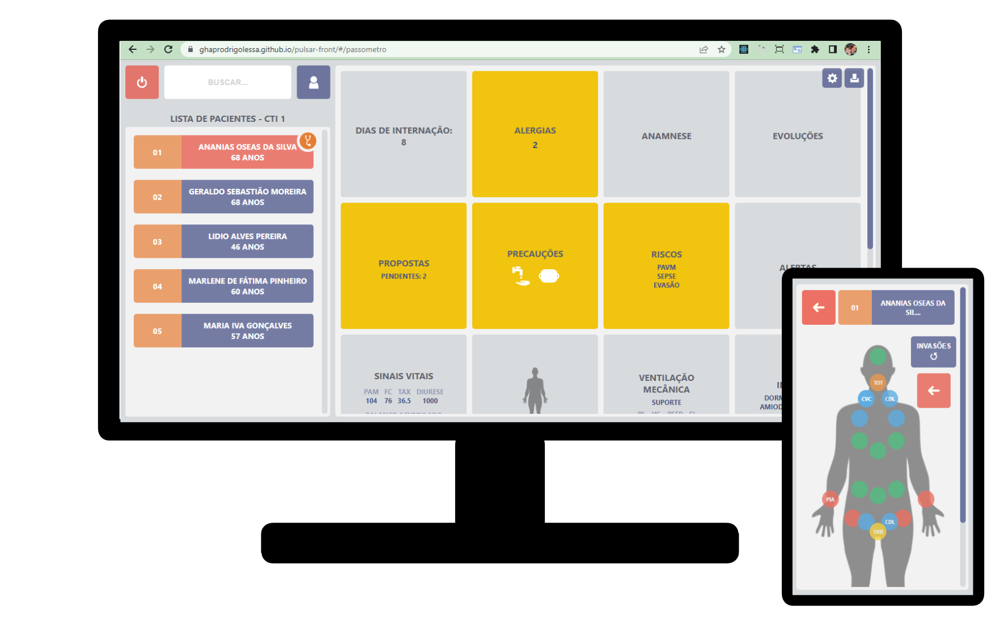

MAIS QUE UM PASSÔMETRO DIGITAL: A FERRAMENTA DE GESTÃO PERFEITA PARA A CORRIDA BEIRA LEITO.
Aprimore o tratamento das informações relativas à assistência dos pacientes na unidade que você trabalha ou coordena com essa aplicação inovadora!
INTRODUÇÃO
O "passômetro" é uma ferramenta informal amplamente utilizada nos serviços hospitalares, que objetiva sintetizar informações relativas aos cuidados diários dos pacientes, disponibilizando-as de forma mais acessível e sistematizada aos profissionais envolvidos. O registro conciso de tantas informações é um desafio crescente, e não existem ferramentas profissionais atualmente disponíveis que atendam essa demanda a contento.
Pulsar é a solução criada com a mais atual tecnologia Web e Mobile, destinada a facilitar e organizar o trabalho de coordenadores e plantonistas em unidades de Terapia Intensiva e demais unidades assistenciais hospitalares.
A um custo surpreendentemente baixo, é possível substituir papéis e tabelas improvisadas por uma ferramenta moderna, rápida, de design amigável e que garante a persistência e a segurança das informações registradas.
COMO FUNCIONA
Utilize seu dispositivo móvel (celular android, iPhone ou tablet) e participe da corrida à beira leito atualizando as informações enquanto avalia cada paciente, utilizando uma interface fácil e prática. Organize a passagem de plantão atualizando mais informações na versão Desktop da aplicação, permitindo assim que os coordenadores e demais colegas possam ter acesso remoto e em tempo integral ao quadro atualizado de todos os pacientes.
Integrada ao ERP utilizado no seu hospital (MV, Gesthos, SpData e Tasy), é possível obter automaticamente informações como dados vitais, resultados de exames laboratoriais (com destaque para as culturas), evoluções multiprofissionais, antibióticos em uso e até mesmo medicações de controle especial prescritas. Também é possível montar e salvar no PEP do hospital uma evolução padronizada recuperando todas as informações inseridas na aplicação, poupando o plantonista da tarefa de evoluir tudo também no Prontuário Eletrônico.
Analise os alertas emitidos automaticamente pela Pulsar, referentes a riscos assistenciais, critérios de sepse, dados clínicos alterados, tempo prolongado de dispositivos, uso prolongado de antibióticos, ou cobrança de resultados pendentes de culturas.
Organize e tenha acesso em tempo integral a informações importantes como:
- Dados completos de anamnese.
- Evolução.
- Alergias.
- Precauções.
- Controles clínicos (dados vitais, balanço hídrico acumulado).
- Parâmetros ventilatórios.
- Invasões e tempo de implantação das mesmas.
- Drogas em infusão contínua.
- Resultados de exames (sangue, imagem).
- Antibioticoterapia.
- Culturas.
- Propostas / planejamento terapêutico.
- Pedidos de interconsultas.
ALGUMAS TELAS


FEATURES FUTURAS (2023-2024)
- Prescrição com interface amigável e ágil.
- Monitoramento por câmera dos pacientes, com recursos de Inteligência Artificial para as seguintes tarefas:
- Verificar se a equipe está usando a paramentação adequada antes de dar assistência aos pacientes com precaução de contato.
- Receber em tempo real os dados vitais através da leitura do monitor do paciente.
- Verificar se a mudança de decúbito está sendo realizada no tempo previsto (pulseira).
- Gerar alerta para risco de queda, se o paciente agita no leito.
TESTE AGORA!
Acesse a aplicação pulsar utilizando o login "123" e a senha "123".